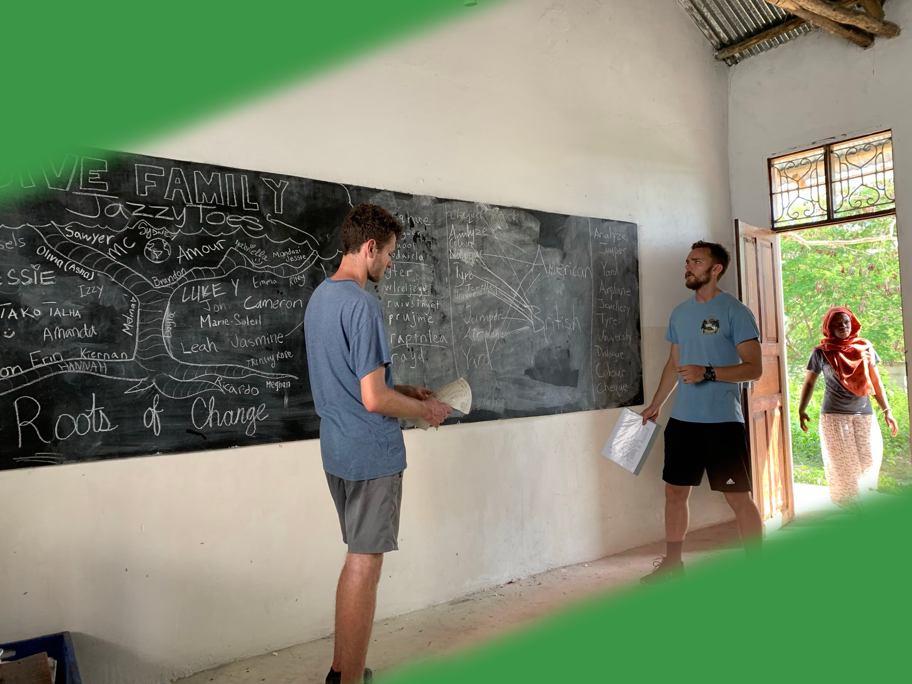

GIVE
Traveling with purpose


Teaching
In the mornings, I helped instruct a computer class to the local students of Kairo village
The students learned the basics of Microsoft Word, how to create aggregate functions in Excel. I also taught the teacher of the course how to build a website using basic HTML, CSS, and JavaScript. He also learned how to use an online website builder such as Wix.
I also got the opportunity to teach English to the students in the literacy class and they helped to teach me Swahili!
Construction
In the evenings, I aided in the construction of a building for the school
During my time in Zanzibar, the school was building an office space for the teachers.
I aided in the construction by helping mix cement, lay rock, and gather dirt to also support a permaculture project at the school.